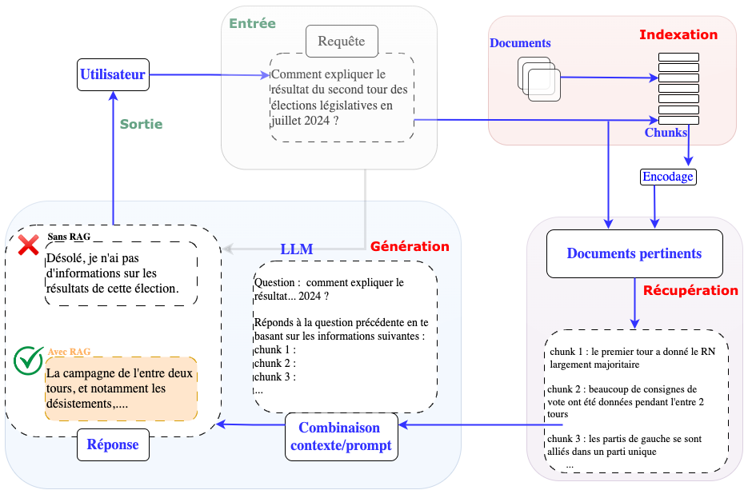
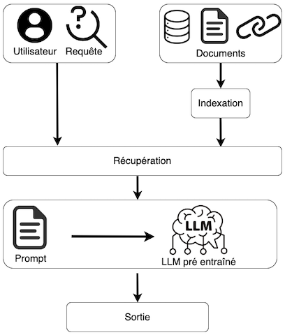
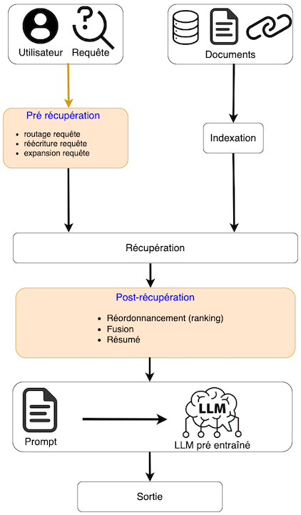
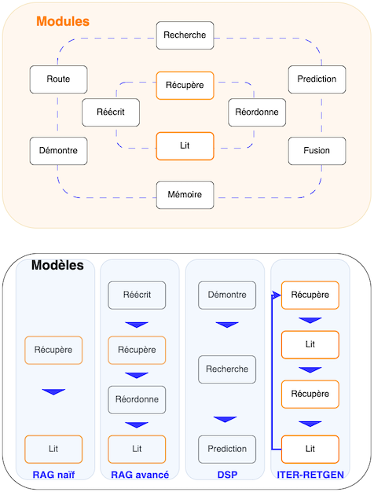

Utilisation de LLM#
Bien que les grands modèles de langage pré-entraînés tels que le GPT, LLAMA ou Mistral possèdent de vastes connaissances linguistiques, ils manquent de spécialisation dans des domaines spécifiques et pechent parfois par manque de mise à jour de leur données d’apprentissage.
Fine Tuning#
Le finetuning (voir également ce cours), dans le contexte des LLM, est le processus d’ajustement des paramètres d’un modèle pré-entraîné à une tâche ou à un domaine précis. Il permet au modèle d’apprendre à partir de données spécifiques à un domaine afin de le rendre plus précis et plus efficace pour des applications ciblées.
En exposant le modèle à des exemples spécifiques à une tâche, le modèle peut acquérir une compréhension plus profonde des nuances du domaine. Cela permet de combler le fossé entre un modèle de langage polyvalent et un modèle spécialisé, et de libérer tout le potentiel des LLM dans des domaines spécifiques.
Exemples d’application#
Classification de textes#
Les applications de classification de séquences représentent souvent une séquence d’entrée avec une seule représentation consolidée. Avec les RNN, on utilise la couche cachée associée à l’élément d’entrée final pour représenter la séquence entière. Une approche similaire est utilisée avec les transformers. Un vecteur supplémentaire est ajouté au modèle pour représenter la séquence entière. Ce vecteur est parfois appelé l’encodage de la séquence. Dans BERT, le token [CLS] joue le rôle de cette encodage, est ajouté au vocabulaire et est placé au début de toutes les séquences d’entrée, à la fois pendant le pré entraînement et l’encodage. Le vecteur de sortie dans la couche finale du modèle pour l’entrée [CLS] représente la séquence d’entrée entière et sert d’entrée à une tête de classification, une régression logistique ou un réseau de neurones en classification qui prend la décision.
Par exemple, en classification de sentiments, une manière simple de finetuner un LLM est d’apprendre un ensemble de poids \(\boldsymbol W_C\) pour transformer le vecteur de sortie \(\boldsymbol z_{CLS}\) pour le token [CLS] en un ensemble de scores sur l’ensemble des sentiments possibles (par exemple positif, neutre, négatif).
Le finetuning des valeurs de \(\boldsymbol W_C\) nécessite un ensemble d’apprentissage supervisé constitué de séquences d’entrée étiquetées avec la classe appropriée. L’entraînement se fait par minimisation de l’entropie croisée. Une fois appris, et étant donné un texte \(\boldsymbol x\), celui-ci est encodé par le LLM pour générer \(\boldsymbol z_{CLS}\), multiplié à son tour par \(\boldsymbol W_C\) et déterminer le sentiment de \(\boldsymbol x\) en recherchant le maximum des composantes de \(softmax(\boldsymbol W_C\boldsymbol z_{CLS})\).
C’est l’exemple qui sera codé dans la partie implémentation.
Classification de paires de textes#
Les applications pratiques qui entrent dans cette catégorie incluent la détection de paraphrases (A et B sont elles des paraphrases l’une de l’autre ?), l’implication logique (A entraîne-t-elle logiquement B ?) et la cohérence du discours (quel est le degré de cohérence de B en tant que suite de A ?)
Le finetuning se déroule ici de la même manière que pour le pré-entraînement dans le cadre de la prédiction de la suite d’une phrase. Au cours du finetuning, des paires de phrases étiquetées provenant des données d’apprentissage sont présentées au modèle afin de produire les sorties \(\boldsymbol z\) pour chaque token d’entrée. Comme pour la classification de textes, le vecteur de sortie associé au jeton [CLS] représente la vue du modèle sur la paire de phrases d’entrée. Les deux phrases d’entrées sont séparées par le token [SEP]. Pour effectuer la classification, le vecteur [CLS] est multiplié par un ensemble de poids d’apprentissage de la classification et passe par un softmax pour générer des prédictions d’étiquettes, qui sont ensuite utilisées pour mettre à jour les poids.
RLHF#
Le fine tuning peut se réveler très efficace. Cependant, il présente certains inconvénients. La collecte de données, tout d’abord, peut être extrêmement coûteuse, et nécessite souvent un travail important d’experts qualifiés pour produire les étiquettes (réponses ou autres) souhaitables à chaque question. De plus, dans de nombreux cas, la réponse correcte n’est pas bien définie. Par exemple, si l’invite est « Raconte-moi une histoire qui s’est passée à Clermont-Ferrand », aucun exemple de réponse ne peut englober toutes les réponses possibles. Enfin, s’il est possible d’encourager certains types de réponses, il n’existe aucun moyen de décourager les réponses possibles, telles que celles qui utilisent un langage discriminatoire ou qui ne sont pas suffisamment détaillées.
Un des moyens de résoudre ces problèmes consiste à entraîner un modèle basé sur l’évaluation des réponses de modèles réels. Le travail nécessaire pour évaluer une réponse existante est considérablement moins important que de fournir cette réponse manuellement. En outre, ce système permet de prendre en compte plusieurs réponses valides possibles et peut être utilisé pour décourager activement les réponses nuisibles. L’apprentissage par renforcement à partir du retour d’information humain (RLHF: Reinforcement Learning from Human Feedback) est utilisé pour entraîner des LLM en les encourageant à produire des réponses bien notées.
S’il est difficile d’attribuer une note absolue à une réponse donnée, il est cependant facile de comparer deux ou plusieurs réponses possibles et de classer celle qui est la meilleure. L’approche RLHF procède alors en deux étapes. Tout d’abord, on entraîne un modèle de récompense en utilisant le classement des réponses. Ce modèle calcule un scalaire unique tel que l’ordre de ces scalaires soit conforme aux classements humains. Le LLM est ensuite entraîné à l’aide du modèle de récompense, qui fournit une mesure absolue de la qualité de la réponse.
Modèle de récompense#
Pour entraîner le modèle de récompense, on donne une entrée \(\boldsymbol m\) à un LLM pré-entraîné ou finetuné pour générer deux réponses \(\boldsymbol y_1\) et \(\boldsymbol y_2\). Le modèle de récompense \(r = r_{\boldsymbol \theta}(\boldsymbol m,\boldsymbol y)\) est utilisé deux fois pour générer \(r_1,r_2\) sur les sorties \(\boldsymbol y_1\) et \(\boldsymbol y_2\).
Ce modèle est fondé sur une architecture à base de transformers. Plus précisément, il est courant de finetuner une copie du LLM pré-entraîné en ajoutant une couche linéaire à la sortie finale (ou à la moyenne des sorties) qui correspond à la valeur scalaire unique \(r\) de la récompense.
On suppose pour fixer les idées que ces récompenses sont toujours ordonnées de telle sorte que l’expert ait indiqué qu’il préfère la réponse \(\boldsymbol y_1\) à \(\boldsymbol y_2\). Le modèle de Bradley-Terry calcule alors la probabilité que l’expert a classé la première réponse avant la seconde :
Comme pour la fonction softmax, l’exponentielle traduit les récompenses en nombres positifs et le dénominateur normalise la valeur pour obtenir une distribution de probabilité valide. On souhaite alors maximiser cette probabilité afin que le modèle soit en accord avec les préférences de l’expert. Pour ce faire, on minimise par rétropropagation une fonction de perte basée sur le log-vraisemblance négative
où \(\sigma\) est la fonction sigmoïde, \(\boldsymbol m_i\) est la i-eme entrée et \(\boldsymbol y^i_1,\boldsymbol y^i_2\) les deux réponses associées.
Remark 6
En pratique on décale les valeurs des récompenses pour avoir une moyenne nulle, pour réduire la variance des estimations des gradients.
Dans le cas où on demande à l’expert de classer \(K\) réponses, on peut générer \(\begin{pmatrix}K\\2\end{pmatrix}\) paires qui chacune contribue à la fonction de perte.
Remark 7
On peut également utiliser le modèle de Plackett-Luce qui généralise le modèle de Bradley-Terry à \(K\) réponses.
Utilisation#
On souhaite utiliser ce modèle de récompense pour modifier les paramètres \(\boldsymbol\phi\) du LLM, de sorte à ce qu’il produise des réponses ayant des récompenses fortes lorsqu’elles sont calculées par le modèle \(r_{\boldsymbol\theta}\) entraîné. Idéalement, on doit entraîner le LLM en minimisant une fonction de perte par rapport à \(\boldsymbol\phi\), perte qui doit être faible lorsque les récompenses sont élevées. Cependant, cela ne peut s’envisager ici puisque les \(\boldsymbol y^i\) sont échantillonnées de manière aléatoire suivant la distribution de probabilité discrète sur les tokens. La fonction de perte est donc basée sur une espérance
où l’espérance est prise selon la distribution
On montre que
et cette espérance peut maintenant être approchée en tirant des échantillons de réponses \(\boldsymbol y^i\) du modèle et en calculant les termes directement. Le résultat est onnu sous le nom d”estimateurde fonction de score, à la base de l’algorithme REINFORCE en apprentissage par renforcement. On peut en effet faire un parallèle avec cet algorithme en considérant le LLM comme un agent qui entreprend des actions séquentielles (choisir des tokens) et reçoit une récompense différée du modèle de récompense lorsque le dernier token est choisi.
Remark 8
En pratique on ajoute à la fonction de perte \(L_{\boldsymbol\phi}\) un terme de régularisation de la forme \(-\beta KL(P(\boldsymbol y^i|\boldsymbol m_i,\boldsymbol \phi)||P(\boldsymbol y^i|\boldsymbol m_i,\boldsymbol \phi^0))\) qui pénalise le modèle s’il diverge trop loin de ses paramètres initiaux \(\boldsymbol \phi^0\).
Limites#
Si le RLHF a montré de bonnes performances, le système en deux étapes, et l’instabilité potentielle de l’étape d’apprentissage par renforcement, le rendent très (trop) complexe. D’autres alternatives sur l’optimisation directe de préférences (voir par exemple cet article ou celui-là) sont proposées pour simplifier la démarche et encore améliorer les performances.
Retrieval-Augmented Generation#
Les LLM présentent des capacités impressionnantes mais se heurtent à des difficultés telles que l’hallucination, les connaissances obsolètes et les processus de raisonnement non transparents et non traçables. La génération améliorée par récupération, ou plus communément Retrieval-Augmented Generation (RAG), apparaît comme une solution prometteuse en incorporant des connaissances provenant de bases de données externes. Cela améliore la précision et la crédibilité de la génération et permet une mise à jour continue des connaissances et l’intégration d’informations spécifiques au domaine. Le RAG fusionne les connaissances internes des LLM avec de grands référentiels dynamiques issus des bases de données externes.
On donne ici une brève introduction aux RAG.
La figure (Fig. 86) présente une application typique d’un RAG. Un utilisateur pose une question à un LLM sur une actualité récente et largement débattue. Le LLm étant préentrainé, il n’est pas en mesure, au départ, de fournir des informations actualisées sur l’évolution récente de la situation. Le principe d’un RAG est de combler ce manque d’information récente en recherchant et en intégrant des connaissances provenant de bases de données externes. Dans le cas présent, il rassemble des articles de presse pertinents en rapport avec la requête de l’utilisateur. Ces articles, combinés à la question initiale, forment une invite (prompt) complète qui permet au LLM de générer une réponse bien informée.

Fig. 86 Vue schématique d’un RAG sur une application de question/réponse. Le système se compose principalement de trois étapes : Indexation : Les documents sont divisés en éléments (chunks), encodés en vecteurs et stockés dans une base de données vectorielle ; Récupération. les \(k\) chunks les plus pertinents par rapport à la question sont récupérés, sur la base d’une similarité sémantique ; Génération : la question originale et les \(k\) chunks sont entrés ensemble dans le LLM pour générer la réponse finale.#
Les méthodes RAG évoluent rapidement et peuvent être classées en trois catégories : les RAG naïfs, les RAG avancés et les RAG modulaires. Bien que les méthodes RAG soient rentables et surpassent les performances du LLM natif, elles présentent également plusieurs limitations.
RAG naïfs#
La figure (Fig. 87)

Fig. 87 Vue schématique d’un RAG naïf.#
RAG avancés#
La figure (Fig. 88)

Fig. 88 Vue schématique d’un RAG avancé.#
RAG modulaires#
La figure (Fig. 89)
La figure (Fig. 89)

Fig. 89 Vue schématique d’un RAG modulaire.#
Implémentation#
On propose ici de finetuner un LLM pour la détection de spams. Partant d’un modèle préentraîné (GPT2) dont on construit l’architecture et on récupère les poids, on le spécialise sur une base de données de spams dédiée (sms_spam_collection).
Implémentation du modèle GPT2#
On charge les paramètres de GPT2 (inspiré de ce code)
import os
import urllib.request
import zipfile
from pathlib import Path
import json
import numpy as np
import pandas as pd
import tensorflow as tf
import torch
import torch.nn as nn
from torch.utils.data import Dataset
def loadGPT2(model_size, models_dir):
model_dir = os.path.join(models_dir, model_size)
base_url = "https://openaipublic.blob.core.windows.net/gpt-2/models"
filenames = ["checkpoint", "encoder.json", "hparams.json","model.ckpt.data-00000-of-00001", "model.ckpt.index","model.ckpt.meta", "vocab.bpe"]
os.makedirs(model_dir, exist_ok=True)
for f in filenames:
download_file(os.path.join(base_url, model_size, f), os.path.join(model_dir, f))
ckpt_path = tf.train.latest_checkpoint(model_dir)
settings = json.load(open(os.path.join(model_dir, "hparams.json")))
params = {"blocks": [{} for _ in range(settings["n_layer"])]}
for name, _ in tf.train.list_variables(ckpt_path):
variable_array = np.squeeze(tf.train.load_variable(ckpt_path, name))
variable_name_parts = name.split("/")[1:]
target_dict = params
if variable_name_parts[0].startswith("h"):
layer_number = int(variable_name_parts[0][1:])
target_dict = params["blocks"][layer_number]
for key in variable_name_parts[1:-1]:
target_dict = target_dict.setdefault(key, {})
last_key = variable_name_parts[-1]
target_dict[last_key] = variable_array
return settings, params
def download_file(url, destination):
with urllib.request.urlopen(url) as response:
file_size = int(response.headers.get("Content-Length", 0))
if os.path.exists(destination):
file_size_local = os.path.getsize(destination)
if file_size == file_size_local:
print(f"File already exists and is up-to-date: {destination}")
return
block_size = 1024
with open(destination, "wb") as file:
print("Fichier ",destination)
while True:
chunk = response.read(block_size)
if not chunk:
break
file.write(chunk)
On réécrit ensuite le modèle GPT2.
On commence par l’attention multi-tête
class MultiHeadAttention(nn.Module):
def __init__(self, d_in, d_out, context_length, dropout, num_heads, qkv_bias=False):
super().__init__()
self.d_out = d_out
self.num_heads = num_heads
self.head_dim = d_out // num_heads
self.W_query = nn.Linear(d_in, d_out, bias=qkv_bias)
self.W_key = nn.Linear(d_in, d_out, bias=qkv_bias)
self.W_value = nn.Linear(d_in, d_out, bias=qkv_bias)
self.out_proj = nn.Linear(d_out, d_out)
self.dropout = nn.Dropout(dropout)
self.register_buffer(
'mask',
torch.triu(torch.ones(context_length,context_length,), diagonal=1)
)
def forward(self, x):
batch_size, num_tokens, embedding_length = x.shape
keys = self.W_key(x)
queries = self.W_query(x)
values = self.W_value(x)
# Q,K,V
queries = queries.view(batch_size, num_tokens, self.num_heads, self.head_dim)
queries = queries.transpose(1, 2)
keys = keys.view(batch_size, num_tokens, self.num_heads, self.head_dim)
keys = keys.transpose(1, 2)
values = values.view(batch_size, num_tokens, self.num_heads, self.head_dim)
values = values.transpose(1, 2)
attention_scores = queries @ keys.transpose(2, 3)
mask_bool = self.mask.bool()[:num_tokens, :num_tokens]
attention_scores.masked_fill_(mask_bool, -torch.inf)
attention_weights = torch.softmax(attention_scores / keys.shape[-1]**0.5, dim=-1)
attention_weights = self.dropout(attention_weights)
context_vectors = (attention_weights @ values).transpose(1, 2)
context_vectors = context_vectors.contiguous().view(batch_size, num_tokens, self.d_out)
return self.out_proj(context_vectors)
Puis la couche de normalisation
class LayerNorm(nn.Module):
def __init__(self, emb_dim):
super().__init__()
self.eps = 1e-5
self.scale = nn.Parameter(torch.ones(emb_dim))
self.shift = nn.Parameter(torch.zeros(emb_dim))
def forward(self, x):
mean = x.mean(dim=-1, keepdim=True)
var = x.var(dim=-1, keepdim=True, unbiased=False)
normalized_x = (x - mean) / torch.sqrt(var + self.eps)
return self.scale * normalized_x + self.shift
et le MLP utilisant la fonction d’activation GELU.
class GELU(nn.Module):
def __init__(self):
super().__init__()
def forward(self, x):
return 0.5 * x * (1 + torch.tanh(
torch.sqrt(torch.tensor(2.0 / torch.pi)) *
(x + 0.044715 * torch.pow(x, 3))
))
class MLP(nn.Module):
def __init__(self, config):
super().__init__()
self.layers = nn.Sequential(
nn.Linear(config["emb_dim"], 4 * config["emb_dim"]),
GELU(),
nn.Linear(4 * config["emb_dim"], config["emb_dim"]),
)
def forward(self, x):
return self.layers(x)
et enfin le bloc Transformer.
lass TransformerBlock(nn.Module):
def __init__(self, config):
super().__init__()
self.attention = MultiHeadAttention(
d_in=config["emb_dim"],
d_out=config["emb_dim"],
context_length=config["context_length"],
dropout=config["drop_rate"],
num_heads=config["n_heads"],
qkv_bias=config["qkv_bias"]
)
self.ff = MLP(config)
self.norm1 = LayerNorm(config["emb_dim"])
self.norm2 = LayerNorm(config["emb_dim"])
self.drop_shortcut = nn.Dropout(config["drop_rate"])
def forward(self, x):
shortcut = x
# Couche d'attention
x = self.norm1(x)
x = self.attention(x)
x = self.drop_shortcut(x)
#connexion résiduelle
x = x + shortcut
# MLP
shortcut = x
x = self.norm2(x)
x = self.ff(x)
x = self.drop_shortcut(x)
#connexion résiduelle
x = x + shortcut
return x
Tout ceci permet de construire le modèle GPT2. On se donne une fonction de chargement des poids pré-entraînés, et on créé une classe GPTModel.
def assign(left, right):
return torch.nn.Parameter(torch.tensor(right))
import numpy as np
def load_weights(gpt, params):
gpt.positional_embedding.weight = assign(gpt.positional_embedding.weight, params['wpe'])
gpt.token_embedding.weight = assign(gpt.token_embedding.weight, params['wte'])
for b in range(len(params["blocks"])):
q_w, k_w, v_w = np.split(
(params["blocks"][b]["attn"]["c_attn"])["w"], 3, axis=-1)
gpt.trf_blocks[b].attention.W_query.weight = assign(
gpt.trf_blocks[b].attention.W_query.weight, q_w.T)
gpt.trf_blocks[b].attention.W_key.weight = assign(
gpt.trf_blocks[b].attention.W_key.weight, k_w.T)
gpt.trf_blocks[b].attention.W_value.weight = assign(
gpt.trf_blocks[b].attention.W_value.weight, v_w.T)
q_b, k_b, v_b = np.split(
(params["blocks"][b]["attn"]["c_attn"])["b"], 3, axis=-1)
gpt.trf_blocks[b].attention.W_query.bias = assign(
gpt.trf_blocks[b].attention.W_query.bias, q_b)
gpt.trf_blocks[b].attention.W_key.bias = assign(
gpt.trf_blocks[b].attention.W_key.bias, k_b)
gpt.trf_blocks[b].attention.W_value.bias = assign(
gpt.trf_blocks[b].attention.W_value.bias, v_b)
gpt.trf_blocks[b].attention.out_proj.weight = assign(
gpt.trf_blocks[b].attention.out_proj.weight,
params["blocks"][b]["attn"]["c_proj"]["w"].T)
gpt.trf_blocks[b].attention.out_proj.bias = assign(
gpt.trf_blocks[b].attention.out_proj.bias,
params["blocks"][b]["attn"]["c_proj"]["b"])
gpt.trf_blocks[b].ff.layers[0].weight = assign(
gpt.trf_blocks[b].ff.layers[0].weight,
params["blocks"][b]["mlp"]["c_fc"]["w"].T)
gpt.trf_blocks[b].ff.layers[0].bias = assign(
gpt.trf_blocks[b].ff.layers[0].bias,
params["blocks"][b]["mlp"]["c_fc"]["b"])
gpt.trf_blocks[b].ff.layers[2].weight = assign(
gpt.trf_blocks[b].ff.layers[2].weight,
params["blocks"][b]["mlp"]["c_proj"]["w"].T)
gpt.trf_blocks[b].ff.layers[2].bias = assign(
gpt.trf_blocks[b].ff.layers[2].bias,
params["blocks"][b]["mlp"]["c_proj"]["b"])
gpt.trf_blocks[b].norm1.scale = assign(
gpt.trf_blocks[b].norm1.scale,
params["blocks"][b]["ln_1"]["g"])
gpt.trf_blocks[b].norm1.shift = assign(
gpt.trf_blocks[b].norm1.shift,
params["blocks"][b]["ln_1"]["b"])
gpt.trf_blocks[b].norm2.scale = assign(
gpt.trf_blocks[b].norm2.scale,
params["blocks"][b]["ln_2"]["g"])
gpt.trf_blocks[b].norm2.shift = assign(
gpt.trf_blocks[b].norm2.shift,
params["blocks"][b]["ln_2"]["b"])
gpt.final_norm.scale = assign(gpt.final_norm.scale, params["g"])
gpt.final_norm.shift = assign(gpt.final_norm.shift, params["b"])
gpt.out_head.weight = assign(gpt.out_head.weight, params["wte"])
class GPTModel(nn.Module):
def __init__(self, config):
super().__init__()
self.token_embedding = nn.Embedding(config["vocab_size"], config["emb_dim"])
self.positional_embedding = nn.Embedding(config["context_length"], config["emb_dim"])
self.drop_embedding = nn.Dropout(config["drop_rate"])
self.trf_blocks = nn.Sequential(
*[TransformerBlock(config) for _ in range(config["n_layers"])]
)
self.final_norm = LayerNorm(config["emb_dim"])
self.out_head = nn.Linear(config["emb_dim"], config["vocab_size"], bias=False)
def forward(self, in_idx):
batch_size, sequence_length = in_idx.shape
token_embeddings = self.token_embedding(in_idx)
positional_embeddings = self.positional_embedding(
torch.arange(sequence_length, device=in_idx.device)
)
x = token_embeddings + positional_embeddings
x = self.drop_embedding(x)
x = self.trf_blocks(x)
x = self.final_norm(x)
logits = self.out_head(x)
return logits
Pour la génération, on utilise l’échantillonnage avec paramètre de température ou top-k
def generate(model, idx, max_new_tokens, context_size, temperature=0.0, top_k=None, eos_id=None):
for _ in range(max_new_tokens):
idx_cond = idx[:, -context_size:]
with torch.no_grad():
logits = model(idx_cond)
logits = logits[:, -1, :]
if top_k is not None:
top_logits, _ = torch.topk(logits, top_k)
min_val = top_logits[:, -1]
logits = torch.where(
logits < min_val,
torch.tensor(float('-inf')).to(logits.device),
logits
)
if temperature > 0.0:
logits = logits / temperature
probs = torch.softmax(logits, dim=-1)
idx_next = torch.multinomial(probs, num_samples=1)
else:
idx_next = torch.argmax(logits, dim=-1, keepdim=True)
if idx_next == eos_id:
break
idx = torch.cat((idx, idx_next), dim=1)
return idx
On utilise tiktoken comme tokenizer.
import tiktoken
def text_to_token_ids(text, tokenizer):
encoded = tokenizer.encode(text, allowed_special={'<|endoftext|>'})
encoded_tensor = torch.tensor(encoded).unsqueeze(0)
return encoded_tensor
def token_ids_to_text(token_ids, tokenizer):
flat = token_ids.squeeze(0)
return tokenizer.decode(flat.tolist())
tokenizer = tiktoken.get_encoding("gpt2")
Fine Tuning#
Maintenant que le modèle est construit, on s’occupe du finetuning. On commence par télécharger les données pour le finetuning. On utilise une collection de spam SMS qui est un ensemble public de messages SMS étiquetés qui ont été collectés dans le cadre de la recherche sur les spams en téléphonie mobile.
url = "https://archive.ics.uci.edu/static/public/228/sms+spam+collection.zip"
zip_path = "sms_spam_collection.zip"
extracted_path = "sms_spam_collection"
data_file_path = Path(extracted_path) / "SMSSpamCollection.tsv"
if data_file_path.exists():
print(f"{data_file_path} already exists. Skipping download and extraction.")
return
with urllib.request.urlopen(url) as response:
with open(zip_path, "wb") as out_file:
out_file.write(response.read())
with zipfile.ZipFile(zip_path, "r") as zip_ref:
zip_ref.extractall(extracted_path)
original_file_path = Path(extracted_path) / "SMSSpamCollection"
os.rename(original_file_path, data_file_path)
Ce jeu de données contient 4824 sms valides, et 747 spams. On rééquilibre ces données non balancées
df = pd.read_csv(data_file_path, sep="\t", header=None, names=["Label", "Text"])
def create_balanced_dataset(df):
num_spam = df[df["Label"] == "spam"].shape[0]
ham_subset = df[df["Label"] == "ham"].sample(num_spam, random_state=123)
balanced_df = pd.concat([ham_subset, df[df["Label"] == "spam"]])
return balanced_df
balanced_df = create_balanced_dataset(df)
# Conversion des labels
balanced_df["Label"] = balanced_df["Label"].map({"ham": 0, "spam": 1})
On prétraite ces données en ensembles d’apprentissage, de test, de validation
def random_split(df, train_frac, validation_frac):
df = df.sample(frac=1, random_state=123).reset_index(drop=True)
t = int(train_frac*len(df))
v = train_end + int(len(df) * validation_frac)
return df[:t], df[t:v], df[v:]
train_df, validation_df, test_df = random_split(balanced_df, 0.7, 0.1)
train_df.to_csv("train.csv", index=None)
validation_df.to_csv("validation.csv", index=None)
test_df.to_csv("test.csv", index=None)
et on construit les structures de données adéquates
class SpamDataset(Dataset):
def __init__(self, csv_file, tokenizer, max_length=1024, pad_token_id=50256):
self.data = pd.read_csv(csv_file)
# Encodage
self.encoded_texts = [tokenizer.encode(text) for text in self.data["Text"]]
if max_length is None:
self.max_length = self._longest_encoded_length()
else:
self.max_length = max_length
# Troncature des textes trop longs
self.encoded_texts = [encoded_text[:self.max_length] for encoded_text in self.encoded_texts]
# Padding des textes
self.encoded_texts = [
encoded_text + [pad_token_id] * (self.max_length - len(encoded_text))
for encoded_text in self.encoded_texts
]
def __getitem__(self, index):
encoded_text = self.encoded_texts[index]
label = self.data.iloc[index]["Label"]
return (
torch.tensor(encoded_text, dtype=torch.long),
torch.tensor(label, dtype=torch.long)
)
def __len__(self):
return len(self.data)
def _longest_encoded_length(self):
max_length = 0
for encoded_text in self.encoded_texts:
encoded_length = len(encoded_text)
max_length = max(max_length, encoded_length)
return max_length
num_workers = 0
batch_size = 8
torch.manual_seed(123)
train_dataset = SpamDataset(csv_file="train.csv",tokenizer=tokenizer,max_length=None)
train_loader = DataLoader(dataset=train_dataset,batch_size=batch_size,shuffle=True,num_workers=num_workers,drop_last=True,)
validation_dataset = SpamDataset(csv_file="validation.csv",tokenizer=tokenizer,max_length=train_dataset.max_length)
val_loader = DataLoader(dataset=validation_dataset,batch_size=batch_size,shuffle=False,num_workers=num_workers,drop_last=False,)
test_dataset = SpamDataset(csv_file="test.csv",tokenizer=tokenizer,max_length=train_dataset.max_length)
test_loader = DataLoader(dataset=test_dataset,batch_size=batch_size,shuffle=False,num_workers=num_workers,drop_last=False,)
Modèle à entraîner#
On instantie le modèle : on propose ici 4 versions de GPT2, variant par leur architecture et le nombre de paramètres (hors encodage).
CONFIG = {
"vocab_size": 50257, # taille vocabulaire
"context_length": 1024, # taille du contexte
"drop_rate": 0.0, # Dropout
"qkv_bias": True # On autorise un biais que Q,K et V
}
model_configs = {
"gpt2-small (124M)": {"emb_dim": 768, "n_layers": 12, "n_heads": 12},
"gpt2-medium (355M)": {"emb_dim": 1024, "n_layers": 24, "n_heads": 16},
"gpt2-large (774M)": {"emb_dim": 1280, "n_layers": 36, "n_heads": 20},
"gpt2-xl (1558M)": {"emb_dim": 1600, "n_layers": 48, "n_heads": 25},
}
MY_MODEL = "gpt2-medium (355M)"
CONFIG.update(model_configs[MY_MODEL])
model_size = MY_MODEL.split(" ")[-1].lstrip("(").rstrip(")")
settings, params = loadGPT2(model_size=model_size, models_dir="gpt2")
model = GPTModel(CONFIG)
load_weights(model, params)
On réalise le finetuning en fixant tous les paramètres, en ajoutant une tête de classification qui sera entraînée sur les données du problème
for param in model.parameters():
param.requires_grad = False
# tête de classification à deux sorties (spam/non spam)
torch.manual_seed(123)
model.out_head = torch.nn.Linear(in_features=CONFIG["emb_dim"], out_features=2,)
#On autorise le dernier bloc transformer et la dernière couche de normalisation à etre entraînés
for param in model.trf_blocks[-1].parameters():
param.requires_grad = True
for param in model.final_norm.parameters():
param.requires_grad = True
Entraînement#
On définit la fonction de perte
def calculate_loss_loader(data_loader, model, device, num_batches=None):
total_loss = 0
if len(data_loader) == 0:
return float("nan")
elif num_batches is None:
num_batches = len(data_loader)
else:
num_batches = min(num_batches, len(data_loader))
for index, (input_batch, target_batch) in enumerate(data_loader):
if index < num_batches:
input_batch, target_batch = input_batch.to(device), target_batch.to(device)
logits = model(input_batch)[:, -1, :]
loss = torch.nn.functional.cross_entropy(logits, target_batch)
total_loss += loss.item()
else:
break
return total_loss / num_batches
les fonctions d’évaluation
def evaluate_model(model, train_loader, val_loader, device, eval_iter):
model.eval()
with torch.no_grad():
train_loss = calculate_loss_loader(train_loader, model, device, num_batches=eval_iter)
val_loss = calculate_loss_loader(val_loader, model, device, num_batches=eval_iter)
model.train()
return train_loss, val_loss
def calculate_accuracy_loader(data_loader, model, device, num_batches=None):
model.eval()
correct_predictions, num_examples = 0, 0
if num_batches is None:
num_batches = len(data_loader)
else:
num_batches = min(num_batches, len(data_loader))
for index, (input_batch, target_batch) in enumerate(data_loader):
if index < num_batches:
input_batch, target_batch = input_batch.to(device), target_batch.to(device)
with torch.no_grad():
logits = model(input_batch)[:, -1, :]
predicted_labels = torch.argmax(logits, dim=-1)
num_examples += predicted_labels.shape[0]
correct_predictions += (predicted_labels == target_batch).sum().item()
return correct_predictions / num_examples
et on entraîne le modèle en finetuning
def train_classifier(model,train_loader,val_loader,optimizer,device,num_epochs,eval_freq,eval_iter,tokenizer,):
train_losses, val_losses, train_accs, val_accs = [], [], [], []
examples_seen, global_step = 0, -1
for epoch in range(num_epochs):
model.train()
for input_batch, target_batch in train_loader:
optimizer.zero_grad()
input_batch, target_batch = input_batch.to(device), target_batch.to(device)
logits = model(input_batch)[:, -1, :] # Grab logits of last output token only!
loss = torch.nn.functional.cross_entropy(logits, target_batch)
loss.backward()
optimizer.step()
examples_seen += input_batch.shape[0]
global_step += 1
if global_step % eval_freq == 0:
train_loss, val_loss = evaluate_model(model, train_loader, val_loader, device, eval_iter)
train_losses.append(train_loss)
val_losses.append(val_loss)
print(f"Epoch {epoch+1} (Step {global_step:06d}): "f"Perte train {train_loss:.3f}, Perte val {val_loss:.3f}"
)
train_accuracy = calculate_accuracy_loader(train_loader, model, device, num_batches=eval_iter)
print(f"Précision train: {train_accuracy*100:.2f}% | ", end="")
train_accs.append(train_accuracy)
val_accuracy = calculate_accuracy_loader(val_loader, model, device, num_batches=eval_iter)
print(f"Précision val: {val_accuracy*100:.2f}%")
val_accs.append(val_accuracy)
return train_losses, val_losses, train_accs, val_accs, examples_seen
torch.manual_seed(123)
optimizer = torch.optim.AdamW(model.parameters(), lr=5e-5, weight_decay=0.1)
num_epochs = 5
train_losses, val_losses, train_accs, val_accs, examples_seen = train_classifier(
model=model,train_loader=train_loader,val_loader=val_loader,optimizer=optimizer,device=device,
num_epochs=num_epochs,eval_freq=50,eval_iter=5,tokenizer=tokenizer,
)
Utilisation#
Le modèle finetuné est finalement utilisé sur des données entrées par l’utilisateur
def classify(text, model, tokenizer, device, max_length=None, pad_token_id=50256):
model.eval()
input_ids = tokenizer.encode(text)
supported_context_length = model.positional_embedding.weight.shape[1]
input_ids = input_ids[:min(max_length, supported_context_length)]
input_ids += [pad_token_id] * (max_length - len(input_ids))
input_tensor = torch.tensor(input_ids, device=device).unsqueeze(0)
with torch.no_grad():
logits = model(input_tensor)[:, -1, :]
predicted_label = torch.argmax(logits, dim=-1).item()
return "spam" if predicted_label == 1 else "not spam"
examples = [
"Hey you :) how's things? I have a VERY special surprise for you in my new video! No hints...you'll just have to see for yourself ;)",
"MAKE MONEY FAST Work 1 hr/day and earn $150k/week GUARANTEED!!!",
"You can see the status of your manuscript at any time by logging into your account at the Science Journals Content Tracking System",
"Register now to find out how to optimise oncology clinical trials using digital tools to accelerate decision-making. Learn how top 10 pharmaceutical companies are using a combination of DHTs, ePROs, clinical trial platforms and more, to ease oncology research and drastically reduce timelines."
]
for e in examples:
print(f"Message : {e}")
print(f"Classification: {classify(e, model, tokenizer, device, max_length=train_dataset.max_length)}\n ")
Message : Hey you :) how’s things? I have a VERY special surprise for you in my new video! No hints…you’ll just have to see for yourself ;)
Classification: spam
Message : MAKE MONEY FAST Work 1 hr/day and earn $150k/week GUARANTEED!!!
Classification: spam
Message : You can see the status of your manuscript at any time by logging into your account at the Science Journals Content Tracking System
Classification: not spam
Message : Register now to find out how to optimise oncology clinical trials using digital tools to accelerate decision-making. Learn how top 10 pharmaceutical companies are using a combination of DHTs, ePROs, clinical trial platforms and more, to ease oncology research and drastically reduce timelines.
Classification: spam